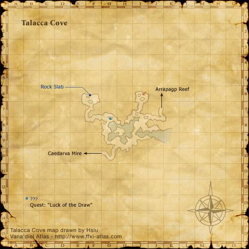

Description
Talacca Cove is a battlefield in Arrapago Islands.
Map

Story walkthroughs in this area
| Story | Mission / quest |
|---|---|
| ToAU 34 | Testing the Waters |
| ToAU 35 | Legacy of the Lost |
| ToAU 36 | Gaze of the Saboteur |
References
External references describe their own server or retail rules. Documented Zenith changes take precedence.
Map credits: Map 1 — HorizonXI Wiki. Original game maps © SQUARE ENIX; redrawn maps retain the credited authorship and license.

Additional level-75 reference
|
This cove near the centre of the Arrapago Islands was once a port favoured by the ehpramadian corsairs who waged war against the Empire of Aht Urhgan. Now this ancient anchorage would seem abandoned by all but relics of an age gone past that lay among the debris and stones that border the shallows... Connecting Areas
|
Involved in Quests/Missions
| Quest | Type | Starter | Location | ||||
|---|---|---|---|---|---|---|---|
| Luck of the Draw | Job (COR) | Ratihb | Aht Urhgan Whitegate (J-12) | ||||
| Breaking the Bonds of Fate | Genkai (COR) | Qultada | Arrapago Reef ??? - (H-10) | ||||
| Puppetmaster Blues | Artifact (PUP) | Iruki-Waraki | Aht Urhgan Whitegate (K-9) | ||||
| Mission | Country | Starter | Location | ||||
| Legacy of the Lost | Aht Urhgan | Naja Salaheem | Aht Urhgan Whitegate | ||||
ISNM
| Name | Required Imperial Credits | Restrictions | ||
| Level | Time | Members | ||
| Call to Arms | 2000 | 60 | 6 people | 30 minutes |
| Compliments to the Chef | 3000 | 75 | 6 people | 30 minutes |
Fishing
|
Weather
| ||||||||||||||||||||||


Notorious Monsters Found Here
|
Name |
Level |
Drops |
Steal |
Family |
Spawns |
Notes | |||||||
| Giant Orobon | Unknown | Orobon | Spawned by Fishing | A, H | |||||||||
| Imp Bandsman | Unknown | Imps | ISNM | A, T(S) | |||||||||
| Angler Orobon | Unknown | Orobon | ISNM | A, T(H) | |||||||||
|
HP = Detects Low HP; M = Detects Magic; Sc = Follows by Scent; T(S) = True-sight; T(H) = True-hearing JA = Detects job abilities; WS = Detects weaponskills; Z(D) = Asleep in Daytime; Z(N) = Asleep at Nighttime | |||||||||||||
Mobs Found Here
|
Name |
Level |
Drops |
Steal |
Family |
Spawns |
Notes | |||||||
| Arrapago Leech | 75 - 75 | Leech | Spawned by Fishing | A, H, Sc | |||||||||
| Lahama | Unknown | Sea Monk | Spawned by Fishing | A, H | |||||||||
| Llamhigyn Y Dwr | 80 - 80 | Doomed | Spawned by Fishing | A, H, HP | |||||||||
| Talacca Clot | Unknown | Clot | Spawned by Fishing | A, H | |||||||||
| Wootzshell | Unknown | Crab | Spawned by Fishing | A, H | |||||||||
|
HP = Detects Low HP; M = Detects Magic; Sc = Follows by Scent; T(S) = True-sight; T(H) = True-hearing JA = Detects job abilities; WS = Detects weaponskills; Z(D) = Asleep in Daytime; Z(N) = Asleep at Nighttime | |||||||||||||
Adapted from Eden Wiki: Talacca Cove · Contributors and history · CC BY-SA 4.0. Revision 43909. Layout, links and optional background text adapted for Zenith.